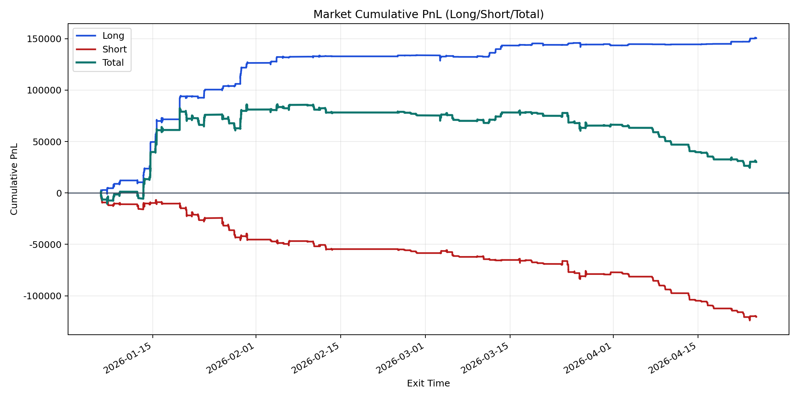
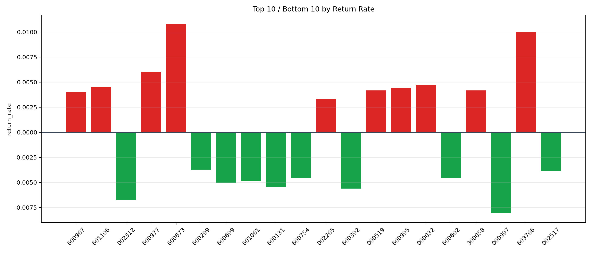

| repo_root | /home/haoranyou/data/output/alpha0.4_1w_5s_3ticks_index_filter/index_weights_500 |
|---|---|
| period_months | 12 |
| period_label | 2026-01-06_to_2026-04-24 |
| start_time | 2026-01-06 10:02:32 |
| end_time | 2026-04-24 14:59:55 |
| n_trades | 23001 |
| n_symbols | 141 |
| total_pnl | 30257.74045000007 |
| long_total_pnl | 150637.42335000017 |
| short_total_pnl | -120379.68290000012 |
| total_entry_notional | 214157491.0 |
| long_entry_notional | 63920423.0 |
| short_entry_notional | 150237068.0 |
| total_return_rate | 0.00014128733162082138 |
| long_return_rate | 0.002356639963881343 |
| short_return_rate | -0.0008012648576182285 |
| top_symbols_by_return | ["600873", "603766", "600977", "000032", "601106", "600995", "000519", "300058", "600967", "002265"] |
| bottom_symbols_by_return | ["000997", "002312", "600392", "600131", "600699", "601061", "600602", "600754", "002517", "600299"] |

